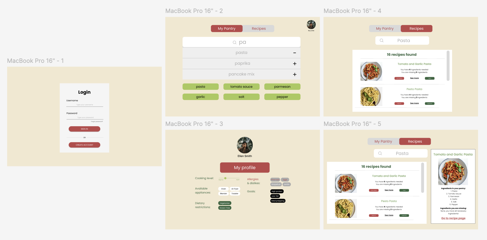

CRAVE AID
Background
Crave Aid was born from a shared frustration with food waste and the everyday question: "What can I make with what I already have?". Our team of four set out to solve this problem, especially for busy students and young professionals. Inspired by personal experiences and user interviews, we envisioned a tool that makes meal planning smarter, more sustainable, and more personalized.
My aims for this project were to:
- Use React to build a clean, usable frontend with intuitive pantry and recipe views.
- Work with Firebase to enable real-time ingredient storage and user-specific data persistence.
- Integrate external APIs, specifically TheMealDB, to dynamically fetch and display recipes.
- Practice full-stack collaboration - merging UI design with backend logic and debugging complex data flows.
Process & Challenges
Crave Aid was a full-stack collaboration that required tight coordination between frontend and backend systems. One of our biggest hurdles was syncing the complex data from TheMealDB API with our React-based UI. The API required two types of calls: one to fetch all matching meal IDs and another to retrieve full recipe data. To handle this, we built a two-step backend pipeline to pull the IDs, query full recipes, and then process them into a clean format - counting non-empty ingredients and matching them to the user’s pantry.
The biggest challenge came in communicating this data to the frontend. We cycled through multiple serialization strategies - 2D arrays, maps, even dynamic parameter packing—before landing on a solution using a custom Recipe class with getter methods. This allowed us to serialize cleanly into JSON and parse the data using JSON.parse on the frontend.
On my end, I designed and built the React frontend, setting up both the pantry and recipe pages with search, autofill, and results rendering. Once Firebase was integrated by my group member for persistent user data, I connected that flow to power pantry updates in real time. In the final stretch, I helped integrate backend responses into the frontend, ensuring our design remained accessible and visually clean while handling a lot of dynamic content.
Here is the Figma mockup of Crave Aid:
Final Product
The finished version of Crave Aid is a responsive, user-friendly web app that helps users reduce food waste by suggesting meals based on what they already have at home. The app features a searchable pantry system where users can add or remove ingredients, and a recipe recommendation engine powered by TheMealDB API. Each recipe includes a name, image, and match score based on pantry overlap, helping users make smart cooking choices fast.
Built with React, Firebase, and custom backend logic in Java, the app also supports persistent user data and dietary filtering. I focused on designing and implementing the frontend—ensuring that both functionality and layout were clean, accessible, and intuitive to use. Users can easily switch between views, search for items, and get instant recipe feedback with no setup required.
Here is a link to our Github Repo, however we would like to note that the program does not run correctly due to issues with liscensing.
Reflection
Crave Aid was one of the most technically ambitious and collaborative projects I have worked on. It challenged me to think deeply about both user needs and developer communication. On the frontend, I learned how to build scalable, clean React interfaces while making sure the user experience remained seamless and intuitive. I also gained experience integrating with Firebase for real-time data handling, and working closely with backend teammates to troubleshoot data transfer issues across systems.
Working in a full-stack team taught me how crucial clear communication is - especially when it comes to passing complex data structures between the front-end and back-end. I am very proud of how we navigated those challenges and shipped a product that not only worked well but solves a meaningful, real-world problem that many of us face. This project pushed me to become more confident as both a developer and a teammate.